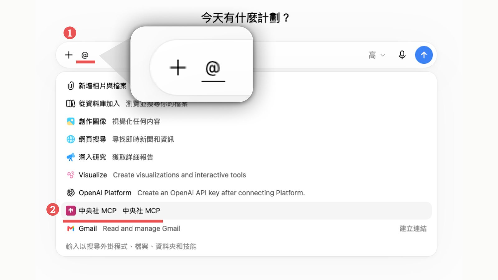
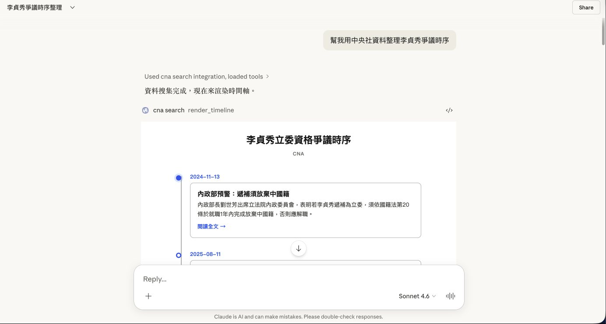

中央社媒體實驗室 · 2026CNA Media Lab · 2026
中央社 MCP Server：讓 AI 回答帶著可查證的新聞出處CNA’s MCP Server: AI answers that cite verifiable news
從原型、認證、計費到上架，一手打造中央社的 Model Context Protocol 服務。Claude、ChatGPT、Gemini、Grok 的使用者可以直接查詢中央社 1990 年以來的報導、圖庫與事實查核資料，AI 的回答也會附上原文連結。 I built CNA’s Model Context Protocol service end to end — prototype, auth, billing and directory listing. Users of Claude, ChatGPT, Gemini and Grok can search CNA reporting since 1990, its photo archive and fact-check data, and the AI’s answers link back to the original stories.
- 角色Role
- 從零開發、主導Built from scratch, lead
- 期間Period
- 2026.03 — 至今2026.03 — Present
- 技術Stack
- TypeScript · MCP SDK · OAuth 2.1 · Elasticsearch · Cloud Run
- 上線平台Platforms
- Claude · ChatGPT · Gemini · Grok
為什麼要做Why
越來越多人直接問 AI 新聞，而不是點進新聞網站。AI 的答案從哪裡來、是否可信，讀者往往看不到。2025 年底，媒體實驗室在計畫書《當 AI 吞噬流量：新聞業怎突圍？》中提出用 MCP 把中央社的查證內容接進 AI 平台——讓 AI 找得到可信的來源，也讓新聞回到讀者眼前。我負責 MCP Server 與 Client 架構開發。
More people now ask AI about the news instead of visiting news sites, and readers rarely see where the answer came from. In late 2025 the Media Lab proposed using MCP to plug CNA’s verified reporting into AI platforms, so assistants can find a trustworthy source and readers are led back to the journalism. I own the MCP server and client architecture.

15 個工具Fifteen tools
- 新聞查詢News關鍵字搜尋（中、英、日、印尼文）、分類最新新聞、編輯精選、單篇全文。Keyword search across Chinese, English, Japanese and Indonesian editions; latest by category; editors’ picks; full articles.
- 譯名與詞彙Names & terms中央社慣用外文譯名、圖庫詞彙擴展。CNA’s house translations of foreign names; photo-archive vocabulary expansion.
- 圖庫Photos新聞照片搜尋，圖說也能作為事實參考。News photo search, with captions usable as supporting facts.
- 外部資料External data政府公開資料、台灣事實查核中心、企業訊息平台。Government releases, Taiwan FactCheck Center, corporate press releases.
- 事實查核Fact-check「指引 → 審查 → 成品」三站流程，每一站都要附上來源，使用者確認後才產出查核稿。A three-step guide → review → publish flow; every step carries sources, and the final write-up waits for the user’s confirmation.
- MCP Apps在對話中直接渲染時間軸、懶人包、知識圖譜與報紙頭版。Timelines, briefs, knowledge graphs and newspaper front pages rendered right inside the chat.

架構Architecture
- TypeScript + MCP SDK，2026.03 從 Python 原型改寫，同時升級為 OAuth 2.1 / PKCE。
- TypeScript + MCP SDK, rewritten from a Python prototype in 2026.03 alongside an upgrade to OAuth 2.1 / PKCE.
- 檢索：Elasticsearch 11 個索引，搭配 Voyage rerank 重新排序。
- Retrieval over 11 Elasticsearch indices, re-ranked with Voyage.
- 認證：OAuth 2.1、CIMD／DCR 客戶端註冊，另支援 API Key（雜湊儲存）。
- Auth: OAuth 2.1 with CIMD / DCR client registration, plus hashed API keys.
- 部署在 Cloud Run 與 Cloud SQL；以規格驅動開發管理 35 份規格、70 次封存變更。
- Runs on Cloud Run and Cloud SQL; 35 specs and 70 archived changes managed through spec-driven development.
從工具到產品From tool to product
工具能用之後，接著是讓外部單位能付費使用：串接 ask.cna 會員系統作為統一登入（IdP）、設計訂閱加 credit 的逐工具計費、金流、試用者機制與團隊方案，並把帳號資料從 Firebase 遷移到 Cloud SQL。
Once the tools worked, the next step was letting outside organisations pay for them: single sign-on through the ask.cna member system, subscription plus per-tool credit billing, payments, trials and team plans, and a migration of account data from Firebase to Cloud SQL.
時間線Timeline
- 媒體實驗室提出中央社 MCP 計畫書。Media Lab proposal for a CNA MCP service.
- 原型從 Python 改寫為 TypeScript，升級 OAuth 2.1 / PKCE。Prototype rewritten in TypeScript; OAuth 2.1 / PKCE.
- 正式專案與管理後台上線；支援 ChatGPT connector。Production repo and admin console; ChatGPT connector support.
- 產品簡報發布，對外提供服務。Product deck published; service opened to external users.
- 工具重新設計上線，導入逐工具 credit 計費。Redesigned tools shipped with per-tool credit billing.
- 串接 ask.cna 統一登入、遷移 Cloud SQL、開放外部訂閱。ask.cna sign-in, Cloud SQL migration, external subscriptions.
- 上架 Claude 官方 Connector Directory。Listed in Claude’s official Connector Directory.